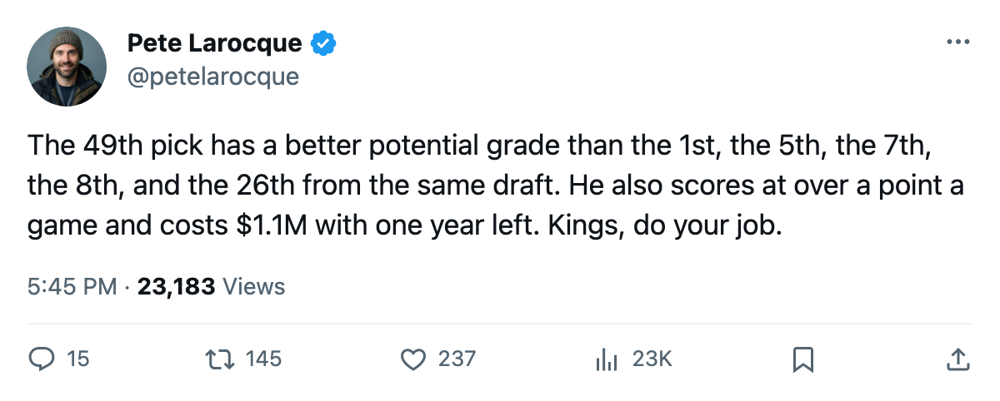
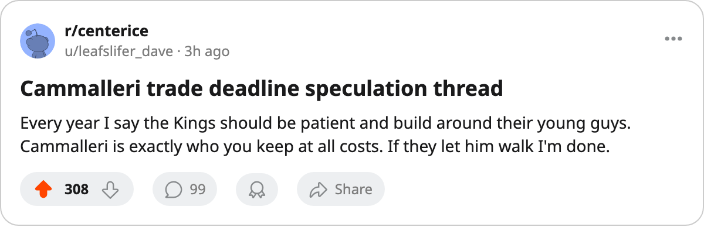

The 49th Pick From 2001 Has a 97 Potential. The 1st Pick Has 85.
Mike Cammalleri committed to Michigan at 15, fell to the 49th, and now out-potentials every 2001 first-rounder the Bureau still rates below 97.
 Pete LarocqueScouting editor · The Prospect File
Pete LarocqueScouting editor · The Prospect File
 Mike Cammalleri83 was born in Richmond Hill, Ontario, committed to the University of Michigan at age 15, graduated from The Country Day School at 17, and watched the
Mike Cammalleri83 was born in Richmond Hill, Ontario, committed to the University of Michigan at age 15, graduated from The Country Day School at 17, and watched the  Los Angeles Kings Kings select him 49th overall in June 2001. He went back to school, having already played the Cold War (74,554 in attendance against Michigan State), led the Wolverines to a CCHA title, and made two Frozen Four runs. The Kings waited.
Los Angeles Kings Kings select him 49th overall in June 2001. He went back to school, having already played the Cold War (74,554 in attendance against Michigan State), led the Wolverines to a CCHA title, and made two Frozen Four runs. The Kings waited.
Four years on, the Book has Cammalleri at 83 overall, +6 on the Development Index, and a potential of 97. The first pick from that same 2001 draft,  Ilya Kovalchuk90 of
Ilya Kovalchuk90 of  Atlanta Thrashers, carries a potential of 85. Twelve points separate them, and the gap runs the wrong way from how June 2001 shook out.
Atlanta Thrashers, carries a potential of 85. Twelve points separate them, and the gap runs the wrong way from how June 2001 shook out.
The numbers behind the gap
| player | draft | overall | form | potential | gp | points | mpg |
|---|---|---|---|---|---|---|---|
| Ilya Kovalchuk | 2001 #1 | 86 | +5 | 85 | 59 | 98 | 20.2 |
 Stanislav Chistov82 Stanislav Chistov82 | 2001 #5 | 81 | +3 | 95 | 48 | 16 | 13.3 |
| Mike Komisarek82 | 2001 #7 | 80 | +6 | 91 | 63 | 70 | 30.0 |
 Pascal Leclaire88 Pascal Leclaire88 | 2001 #8 | 82 | +4 | 93 | 36 | — | 60.6 |
 Dan Blackburn79 Dan Blackburn79 | 2001 #10 | 77 | 0 | 97 | 3 | — | 48.7 |
| Jason Bacashihua83 | 2001 #26 | 81 | +4 | 90 | 1 | — | 20.0 |
| Mike Cammalleri | 2001 #49 | 83 | +6 | 97 | 40 | 44 | 20.9 |
Among 2001 draftees under 24, only Blackburn matches Cammalleri's potential at 97, and Blackburn has played 3 games. Cammalleri is scoring at 1.10 points a game. The Bureau's Book gives him 93 in passing, 90 in puck control, 89 in speed, 89 in agility. His checking sits at 65. He is a 22-year-old right wing with a first-line skill set on a team at 60 points.
What the Kings got in 2001
Los Angeles Kings drafted Cammalleri knowing he would not report right away. He stayed at Michigan for a third season, captained the line, and joined the Kings for 2003-04. That first pro season brought 20 points in 69 games on 11.8 minutes a night. The Index was flat.
This year he has 14 goals and 30 assists in 40 games, up from 20 points in 69 last season. His minutes doubled to 20.9. The Index moved him up 6, from a base of 77 to 83 on the board today. His morale sits at 98.
The contract nobody has addressed
Cammalleri earns $1.10M with 1 year left. At 22, with a 97 potential and a +6 Index, he is the most valuable asset on a Kings roster that sits 19-28-6, 60 points, last in the Pacific and 20 points out of a playoff spot. The club's other high-ceiling young players,  Alexander Frolov78 (95 potential, $1.10M, 1 year left) and Jared Aulin75 (94 potential, $0.90M, 1 year left), carry the same deal shape.
Alexander Frolov78 (95 potential, $1.10M, 1 year left) and Jared Aulin75 (94 potential, $0.90M, 1 year left), carry the same deal shape.
LA's record over its last 10 reads 5 wins and 5 losses. The team scored 4 in two of its last three road games but also lost 4-2 in Dallas and 2-1 in Columbus. The trade deadline sits 23 days out. Cammalleri's contract expires before July 28, when free agency closes. The Kings will either extend him at a raise or watch a 97-potential winger test the market for $0.90M less than his likely next number.
What the Bureau sees next
The potential column is the Book's likelihood of development, not a ceiling. But a 97 sitting on a base of 77 means 20 points of projected growth the Bureau thinks is probable. Kovalchuk, the 1st pick, sits on a base of 81 with a potential of 85. The Book already thinks Kovalchuk's upside is 4 points wide. It thinks Cammalleri's is 14.
The 49th pick from 2001 committed to Michigan at 15 to preserve his college eligibility. He scored 44 points in 29 games that sophomore year, led the CCHA in goals, and won a regional MVP. He turned down the faster path. The Book's current grades say the slower one paid.

